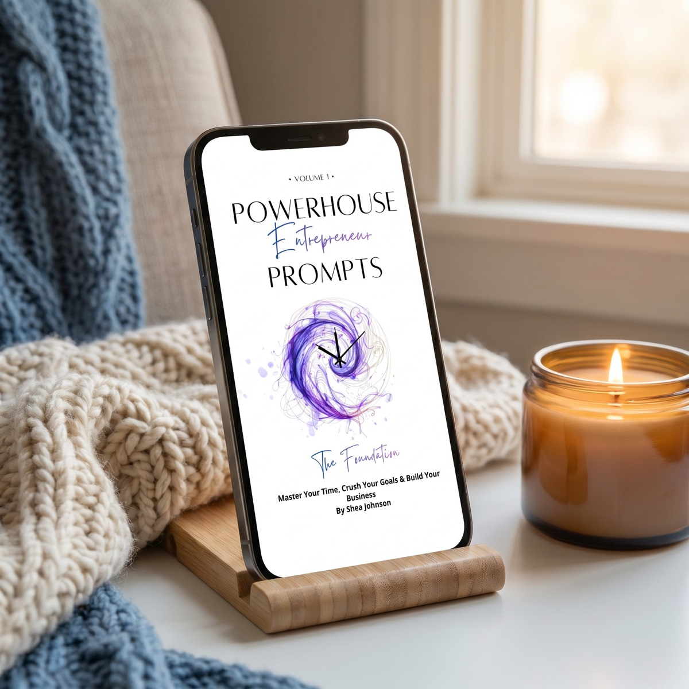

If you are reading this, it means you are about to do something most people never do…
Take a real, honest look at where you are and where you want to go.
That takes courage.
And I do not say that lightly.
Most people spend their whole lives avoiding the questions you are about to answer. They stay busy. They stay distracted. They tell themselves they will figure it out later.
But you are here. You showed up.
And that already puts you ahead.
I want you to know that wherever you are right now is exactly where you need to be. Whether you are starting from scratch, starting over, or just starting to admit that something needs to change —
This is your moment.
Be honest with yourself. Be patient with yourself. And trust that the answers you give will reveal more than you expect.
The AI is going to meet you where you are — not where you think you should be.
Let it.
I created this because I believe every person deserves to build a life and a business that actually fits who they are.
Not someone else’s version.
Yours.
So take a deep breath.
And begin.
I’m rooting for you.
Choosing Your AI Tool
Not all AI tools are built the same.
These prompts are designed to go deep — into your values, your fears, and the parts of yourself you may have been avoiding. That requires an AI that can meet you at that depth.
As of February 2026, independent research consistently places Claude by Anthropic at or near the top for deep reasoning and emotionally intelligent feedback. Studies published in Nature show that frontier AI models like Claude can outperform humans in non-judgmental listening and building closeness. Time Magazine reports that Claude offers structured empathy — acknowledging what you feel first, then suggesting next steps — which is exactly how these prompts are designed to work.
That said, AI evolves quickly. I encourage you to do your own research and choose the model that feels right for you. I will update this section in future editions.
But if you want my honest recommendation…
Start with Claude Opus 4.6.
Sources: Nature (2025), Time Magazine (2025), Unite.AI, Zapier, LogRocket Blog (February 2026).
Your Privacy and Personal Information
This journey asks deeply personal questions — about your mental health, your finances, your relationships, your fears, and the parts of your life you may not talk about with anyone.
That is by design.
The more honest you are, the better the AI can help you. But I also want you to feel safe while doing this work.
Your answers are between you and the AI. I (Shea) will never see your responses. When you upload your document into a Claude Project or paste it into a conversation, that information stays in your account. I do not have access to it.
You control what you share. If a question feels too personal, skip it or answer it in whatever level of detail feels comfortable. Something is always better than nothing — even a partial answer gives the AI more context than a blank one.
You have privacy options:
Incognito or Temporary Chat: Claude and other AI tools offer options to start conversations that are not saved to your history. If you choose this route, make sure to ask the AI to give you a full summary or transcription of everything discussed before you close the window — so you do not lose your work.
Projects (Recommended): If you use a Claude Project, your files are stored in your account and Claude can reference it across multiple conversations. This gives you the best experience. You can remove the document or delete the project at any time.
Delete When Done: After you have completed the journey and received your personalized action plan, you can download or copy everything you want to keep and then delete the project, the conversation, or both. You are always in control.
AI platforms have their own privacy policies that may change over time. I encourage you to review the privacy policy of whichever tool you use. As of the time of this writing, Claude does not use your conversations to train its models when you use the Pro plan, and conversations in Projects remain private to your account.
Claude’s Privacy Policy
A Few Things to Keep in Mind
AI Tools Are Not Experts. AI tools are not substitutes for professional legal, financial, medical, or mental health advice. Always consult a qualified professional for serious matters.
Results Vary. Your results depend on your effort, consistency, and unique circumstances. The real magic happens when you ‘don’t give up’.
No Guarantees. While these prompts have helped many entrepreneurs (including me!), I cannot guarantee specific outcomes.
Business success involves many factors beyond any single tool or resource.
A Note from the Author
When I first started using AI, it changed everything for me.
But here’s what I discovered…
The tool wasn’t what changed my life. It was the questions I learned to ask myself.
I created this volume because I kept seeing the same patterns in the entrepreneurs I worked with. Some were juggling too much and burning out. Some were busy but not growing in the direction they actually wanted. And some had skills they weren’t using because they were too scared to take the leap.
None of them lacked information. What they needed was to go back to the drawing board — to get clear on who they are, what they want, and how to build a life and business that actually aligns with that.
That’s what this journey does.
It takes a holistic approach because who you are as a person directly affects who you are as a business owner. You can’t separate the two.
I tested this with real people and discovered the most powerful method — let the AI see the full picture of who you are. The results are dramatically better when the AI has all the context at once.
Trust the process. And let yourself be surprised by what comes out.
Now go be a powerhouse. 💜
Disclosure: For links you click on and make a purchase, I may earn a commission at no extra cost to you. Thank you for supporting my content!
🎯 **WHERE TO FIND ME:**
Visit www.mssheajohnson.com to connect with me and learn more about what I’m building and what I’m up to.
or
Visit my shop to get Volume 1 of the series today.